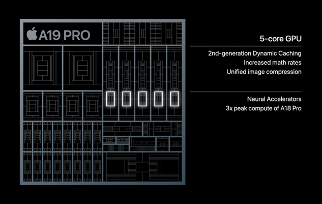

Explain how it works
Typically, when I write a blog post here about a new product, I go into detail on how the product works. Examples include Agentic Equities and DistillJS.
At various points, I've received advice not to share that level of detail because people could copy the project. I haven't followed this advice for a few reasons:
First, these are the blog posts I would want to read. If I'm intrigued by a new product, I want to know how it works. My approach is to write the post I'd want to read.
Second, I'd like for a product of mine to be successful not because its inner workings were kept secret, but because it solved a real problem and developed a genuine moat. Just as "security through obscurity" is not worth relying on, defensibility through obscurity is not a good long-term strategy.
Third, many of the companies I admire don't hold back on technical details. Even Apple—perhaps the best consumer marketing company in the world—includes detailed tech specs in their product announcements. Here is one from their launch event last week:

Apple obviously patents many things and doesn't publicly reveal IP around deep technological breakthroughs, but their willingness to explain how features like heart rate monitoring and sonic acoustics work says something. Revealing information about how a product works builds trust with customers and peers.
Finally, in this new age of AI-powered software development, the shelf life of a given product configuration is dramatically shorter than before. Product-market fit is now more transient than ever. A great software builder in this era won't be defined by a single implementation, but by the ability to continuously generate and implement value-intensive ideas. Whatever the cost of revealing a given point-in-time configuration was before, it is diminishing over time.